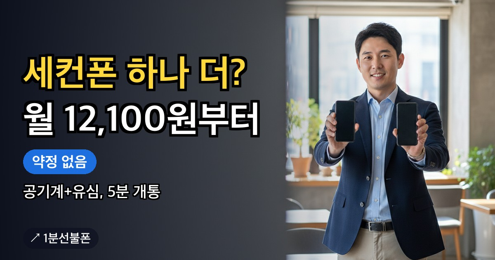

자녀 이름으로 선불폰을 만들어 주려는 보호자가 먼저 알아야 할 것은 개통 방식입니다. 앤텔레콤 안내에서 미성년자는 셀프개통 불가 대상이지만 가입 자체는 가능합니다. 가까운 센터에 보호자가 구비서류를 들고 가서 접수하는 방식이고, 보호자가 직접 갈 때와 대리인이 대신 갈 때 서류 목록이 다르니 방문 전에 구분해서 챙기세요.
- 미성년자도 선불폰 가입은 가능하지만 셀프개통은 불가 대상이라 센터 개통이 필요
- 보호자(법정대리인)가 구비서류를 들고 직접 센터를 찾아 서류 접수
- 보호자가 직접 가면 법정대리인 신분증·가족관계확인서·미성년자 신분증·고객본인확인서
- 대리인이 가면 인감증명서·인감도장 날인 위임장·대리인 신분증이 들어간 별도 목록
- 가족관계확인서는 발급받은 지 3개월 이내, 센터는 예약 후 방문
미성년자 선불폰 개통은 온라인이 아니라 센터에서 합니다
앤텔레콤 안내에는 셀프개통을 할 수 없는 대상이 정해져 있고, 미성년자가 그중 하나입니다. 이 경우 개통은 센터 창구에서 보호자가 접수하는 방식으로 이뤄집니다. 자녀가 신청 페이지에서 직접 인증해 보려 하기 전에 개통 장소가 센터라는 점부터 정해 두세요.
그렇다고 가입이 막힌 것은 아닙니다. 앤텔레콤 안내는 미성년자도 가입할 수 있다고 밝히며, 접수 방식을 보호자가 구비서류를 지참해 센터에서 서류 접수하는 것으로 정해 두었습니다. 유심을 갖고 5분 만에 끝내는 온라인 개통과는 준비물이 완전히 다릅니다. 온라인과 방문 두 갈래의 차이는 선불폰 개통 방법에서 한 번에 볼 수 있습니다.
보호자가 직접 갈 때 챙길 서류 4가지
법정대리인인 보호자가 직접 센터를 찾을 때 앤텔레콤 안내에 적힌 서류는 네 가지입니다.
- 법정대리인 신분증
- 가족관계확인서 — 발급받은 지 3개월 이내의 것
- 미성년자 신분증
- 고객본인확인서
가장 놓치기 쉬운 것은 가족관계확인서의 기한입니다. 발급받은 지 3개월을 넘기면 다시 발급받아야 하니, 방문 날짜를 정한 뒤에 준비하는 편이 안전합니다. 고객본인확인서의 양식을 센터에서 받는지 미리 작성해 가야 하는지는 안내에 나와 있지 않으니 예약할 때 물어보세요.
대리인이 대신 갈 때는 서류 목록이 달라집니다
보호자가 시간을 내기 어려워 다른 사람이 대신 센터를 찾는다면 안내에 적힌 서류는 여섯 가지입니다.
- 법정대리인 신분증
- 인감증명서
- 인감도장이 날인된 위임장
- 가족관계확인서 (발급받은 지 3개월 이내)
- 미성년자 신분증
- 대리인 본인의 신분증
대리인이 가는 경우에는 인감증명서와 인감도장이 날인된 위임장, 대리인 본인의 신분증이 더 필요합니다. 인감 서류는 준비에 시간이 걸릴 수 있으니 대리인이 갈 계획이라면 일정을 넉넉하게 잡으세요.
두 경우의 서류를 표로 비교하면
| 서류 | 보호자가 직접 방문 | 대리인이 방문 |
|---|---|---|
| 법정대리인 신분증 | 필요 | 필요 |
| 가족관계확인서(3개월 이내) | 필요 | 필요 |
| 미성년자 신분증 | 필요 | 필요 |
| 고객본인확인서 | 필요 | - |
| 인감증명서 | - | 필요 |
| 인감도장 날인 위임장 | - | 필요 |
| 대리인 신분증 | - | 필요 |
'-' 표시는 앤텔레콤 안내의 해당 목록에 올라 있지 않다는 뜻입니다. 센터가 추가로 요구하는 서류가 있는지는 예약할 때 한 번 더 확인하세요.
센터 예약부터 방문까지
센터 찾기에서 현재 위치를 쓰거나 지역을 입력하면 가까운 센터 최대 3곳이 목록으로 나오고, 지역별 안내에서도 찾을 수 있습니다. 화면에는 시·구·동 단위 위치만 보이니 마음에 드는 센터에서 예약하기를 눌러 내용을 카카오톡으로 보내세요. 정확한 주소와 방문 시간은 예약이 확인된 뒤에 안내됩니다. 예약부터 당일 흐름까지는 선불폰 방문 개통 글을 보세요.
미성년자 서류 접수가 가능한지와 방문 시간은 센터마다 확인이 필요한 부분입니다. 카카오톡 예약 메시지에 미성년자 개통이라는 점과 보호자가 직접 가는지 대리인이 가는지를 함께 적어 보내면 필요한 서류를 안내받기 쉽습니다.
비용과 요금제는 센터에서 정합니다
선불폰은 가입비를 받지 않고 약정·위약금도 없습니다. 선불 요금제는 월 12,100원부터 고를 수 있습니다. 미성년자 회선에 어떤 요금제를 고를 수 있는지는 공개된 안내에 따로 없으니, 센터 예약 양식의 '잘 모르겠어요 · 상담 후 결정할게요'를 고른 뒤 센터에서 상담받고 정해도 됩니다. 요금제 후보는 요금제 비교에서 미리 볼 수 있습니다.
센터 개통에 유심을 따로 준비해야 하는지는 예약 상담에서 물어보세요. 편의점에서 파는 앤텔레콤용 유심은 6,600~8,800원입니다.
방문 전 마지막 체크리스트
센터에 가기 전에 아래 다섯 가지를 확인해 두면 서류 때문에 다시 가는 일을 줄일 수 있습니다.
- 보호자가 직접 가는지, 대리인이 가는지 정했는지
- 해당하는 목록의 서류를 모두 챙겼는지
- 가족관계확인서가 발급받은 지 3개월 이내인지
- 카카오톡으로 예약을 보내고 주소·방문 시간 안내를 받았는지
- 요금제를 정했는지, 아니면 상담 후 결정으로 적어 보냈는지
센터 방문이 필요한 다른 경우와 일반 준비물은 선불폰 개통 조건 글에서 볼 수 있습니다.
자주 묻는 질문
미성년자도 선불폰을 개통할 수 있나요?
가능합니다. 다만 온라인 셀프개통은 안 되고, 보호자가 구비서류를 지참해 가까운 앤텔레콤 센터에서 서류를 접수하는 방식으로 가입합니다.
미성년자가 혼자 신청 페이지에서 셀프개통해도 되나요?
안 됩니다. 앤텔레콤 안내에서 미성년자는 셀프개통 불가 대상이고 센터 내방 개통이 필요합니다.
보호자가 못 가면 다른 사람이 대신 가도 되나요?
대리인 방문도 안내되어 있습니다. 이때는 법정대리인 신분증, 인감증명서, 인감도장이 날인된 위임장, 가족관계확인서, 미성년자 신분증에 더해 대리인 본인의 신분증이 필요합니다.
가족관계확인서는 언제 발급받은 것이어야 하나요?
보호자가 직접 가는 경우와 대리인이 가는 경우 모두 발급받은 지 3개월 이내의 가족관계확인서를 안내하고 있습니다. 방문 날짜를 정한 뒤 준비하세요.
서류를 갖췄으면 예약 없이 센터에 가도 되나요?
센터 방문은 예약이 먼저입니다. 센터별로 접수 가능 여부와 방문 시간을 사전에 확인하도록 안내되어 있으니, 카카오톡 예약 때 미성년자 개통임을 밝히고 필요한 서류도 함께 확인하세요.
같이 보면 좋은 글

외국인 선불폰 개통 — 센터 방문으로 진행하는 순서와 준비할 것
외국인이 선불폰을 개통할 때 가장 먼저 확인할 것은 방식입니다. 앤텔레콤 안내에서 외국인(여권)은 셀프개통…

개인회생 선불폰 개통 — 회생·파산·워크아웃 중에도 내 명의 번호 만드는 법
개인회생이나 개인 파산, 워크아웃, 채무조정 절차를 밟고 있어도 선불폰은 개통할 수 있습니다. 선불폰은…

세컨폰 개통, 공기계와 유심이면 충분합니다
중고거래·구직·서비스 인증처럼 개인 번호와 분리해서 쓸 두 번째 번호가 필요하다면, 약정 없는 선불폰으로…

선불폰 한달, 약정 없이 딱 그만큼만 쓰는 방법
출장이나 계절 아르바이트처럼 한 달 정도만 번호가 필요하다면 후불폰보다 선불폰이 맞습니다. 요금을 미리…